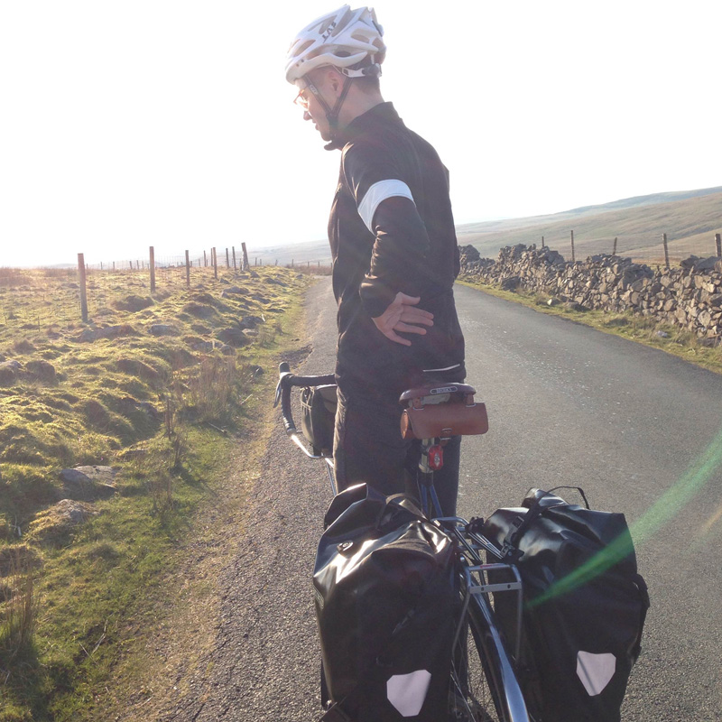

Welcome to The Lake District
"We have breathtaking landscapes
And hills that will make you sick."
20th April 2014
During the easter weekend, we went for a cycling trip to the Lake District.
Everything was amazing, quiet, majestuous .
Untill climbing became so hard I puked.
From the begining
Why do people take the tube? It's expensive, you're underground, cramed into a tin can with hundreds of other people, hidden from the greatest city in the world. On top of framing your day with grumpiness, I'm also almost sure it makes you loose your time. At least a little bit. So here is my plan:
Got to get the miles in your legs
But is riding a bike actually more dangerous? According to two professors at Rutgers University and Virginia Tech , cycling in America results in 33.5 injuries per 100 million kilometers and 5.5 deaths per 10 million km ridden. That may not seem high to you, but when compared to the Dutch, it is. In the Netherlands, there are 1.1 cyclist killed per 100 million km and 1.6 injuries per 10 million km. Now why would I tell you this? Well, because the Dutch are safer precisely due to the number of cyclists on the road. Because there are so many Dutch cyclists, they demand safer infrastructure such as segregated lanes, traffic signals, and the biggest safety feature of them all: awareness by surrounding drivers. Most people both drive and cycle in the Netherlands and it is because the very same drivers also cycle that they are more aware of “the other guy.” You see, “the other guy” is them on any other given day. When you bike, you are becoming not only a more aware driver, but also spreading the culture of cycling. Safety is achieved through numbers. Becoming a cyclist increases those numbers, not to mention it takes a dangerous and polluting car off the crowded road. (And who says you have to ride on a road anyhow? What about trails?)

Jack painfully reaching what we thought was the summit.
But I want to look at another danger not directly related to cycling: complacency. We are a very complacent people, we North Americans. We are deeply satisfied with eating cheeseburgers in our cars, sitting in mind-numbing traffic, and paying $77 billion to maintain an unhealthy and unsustainable behavior: driving a car, especially one with an internal combustion engine. Choosing to bike means choosing to be healthier, saying no to the stress that traffic creates, and to the tax dollars necessary to keep our roads in good repair. By cycling, we are becoming a more active, healthier society. This benefit is unmatched by being a driver.
Like my grand-father used to say: You got to get the miles in your legs, love.
Cycling isn’t convenient: I beg to differ. My bike was about $1500, on sale for $1000 at a model-year close out. This bike has saved me about $800 per year, which means in less than two year’s time I have paid for it and it still looks and rides like new. And that amount of savings only includes gas and oil changes; I haven’t factored in parking, tires, maintenance due to wear and tear, and other hidden costs. Because I save so much money riding, I have the ability to work fewer hours, often saying “No” to private students. (I am an ESL teacher, by the way.) I am not a slave to my car as many are. I even pay a lot less in insurance due to the milage driven being so low. What is the price of a convenience? You tell me.


- 